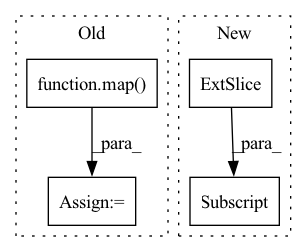

Pattern ID :15195
Before Change
target_width=target_width,
)
scales = torch.tensor(list(map( get_scales_func, list(bboxes)) ))
outputs_dict["scale_h"] = scales[:, 0]
outputs_dict["scale_w"] = scales[:, 1]
return outputs_dict
After Change
bboxes: torch.Tensor, target_height: float = 224.0, target_width: float = 224.0
) -> Dict[str, torch.Tensor]:
object_h = bboxes[:, 2] - bboxes[:, 0]
object_w = bboxes[:, 3] - bboxes[:, 1]
scale_h = target_height / object_h
scale_w = target_width / object_w
return {In pattern: SUPERPATTERN
Frequency: 3
Non-data size: 4
Instances Fragment ID: 51384072
Project Name: dsgoficial/pytorch_segmentation_models_trainer
Commit Name: 98aea36d167c498a7b4511a1c31541e5bbdf7234
Time: 2021-11-27
Author: philipeborba@gmail.com
File Name: pytorch_segmentation_models_trainer/utils/polygonrnn_utils.py
M Class Name: AnonimousClass
N Class Name: AnonimousClass
M Method Name: build_polygonrnn_extra_info_from_bboxes(3)
N Method Name: build_polygonrnn_extra_info_from_bboxes(3)
M Parent Class:
N Parent Class:
M File Name: pytorch_segmentation_models_trainer/utils/polygonrnn_utils.py
N File Name: pytorch_segmentation_models_trainer/utils/polygonrnn_utils.py
M Start Line: 577
M End Line: 592
N Start Line: 580
N End Line: 589
Before Change
metric += sklearn_metrics.mean_squared_error(y_true_los, y_pred_los)
elif metrics_strategy == "MAPE":
metric += sklearn_metrics.mean_absolute_percentage_error(y_true_los, y_pred_los)
metric += np.mean(
np.abs(y_true_outcome - y_pred_outcome)
* max_visits
* np.array(list(map( lambda x: sigma_func(x), y_true_los) ))
)
if verbose:
print("LOS Score:", metric)After Change
for i in range(num_records):
cur_outcome_pred = y_pred_outcome[i]
cur_los_pred = y_pred_los[i]
cur_gt = y_true[i, :]
cur_outcome_true = cur_gt[0]
cur_los_true = cur_gt[1]
prediction_result = calculate_outcome_prediction_result(
cur_outcome_pred, cur_outcome_true Fragment ID: 51384089
Project Name: yhzhu99/covid-ehr-benchmarks
Commit Name: fc9fcafdeae37b009acb4acf87682f0d86306e69
Time: 2022-06-29
Author: yhzhu99@gmail.com
File Name: app/core/evaluation/covid_metrics.py
M Class Name: AnonimousClass
N Class Name: AnonimousClass
M Method Name: multitask_los_metric(6)
N Method Name: multitask_los_metric(7)
M Parent Class:
N Parent Class:
M File Name: app/core/evaluation/covid_metrics.py
N File Name: app/core/evaluation/covid_metrics.py
M Start Line: 83
M End Line: 116
N Start Line: 119
N End Line: 142
Before Change
k_img, v_img = map(lambda t: F.unfold(t, kernel_size, padding = padding, dilation = dilation), (k_img, v_img))
k_img, v_img = map(lambda t: rearrange(t, "b (d j) i -> b i j d", j = kernel_size ** 2), (k_img, v_img))
k_text, v_text = map( lambda t: repeat(t, "b j d -> b i j d", i = img_seq_len), (k_text, v_text))
// let image attend to all of text
k_img = torch.cat((k_text, k_img), dim = 2)After Change
// aggregate
attn_image_to_text, attn_image = attn[..., :text_len] , attn[..., text_len:]
out_image_to_image = einsum("b i j, b i j d -> b i d", attn_image, v_img)
out_image_to_text = einsum("b i j, b j d -> b i d", attn_image_to_text, v_text) Fragment ID: 51384073
Project Name: lucidrains/dalle-pytorch
Commit Name: f14a313431e9072bef9a8219ea3d99d7683ada06
Time: 2021-04-22
Author: lucidrains@gmail.com
File Name: dalle_pytorch/attention.py
M Class Name: SparseConvCausalAttention
N Class Name: SparseConvCausalAttention
M Method Name: forward(3)
N Method Name: forward(3)
M Parent Class: nn.Module
N Parent Class: nn.Module
M File Name: dalle_pytorch/attention.py
N File Name: dalle_pytorch/attention.py
M Start Line: 116
M End Line: 168
N Start Line: 94
N End Line: 173